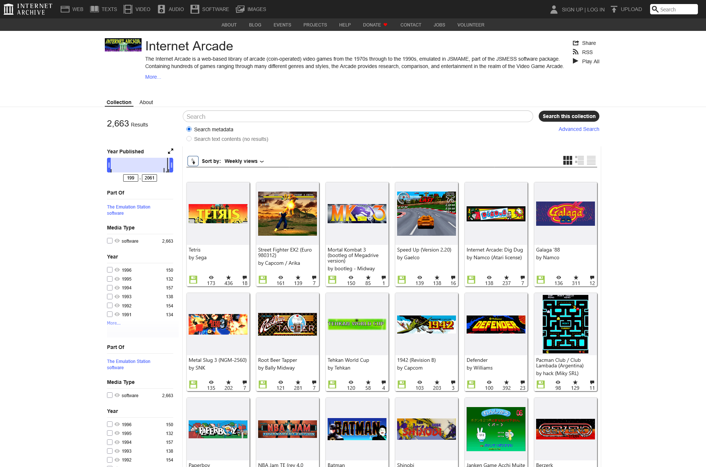
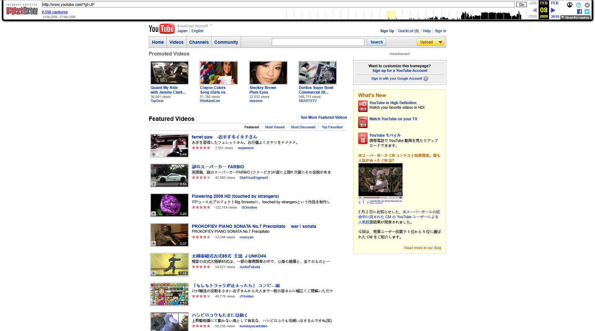
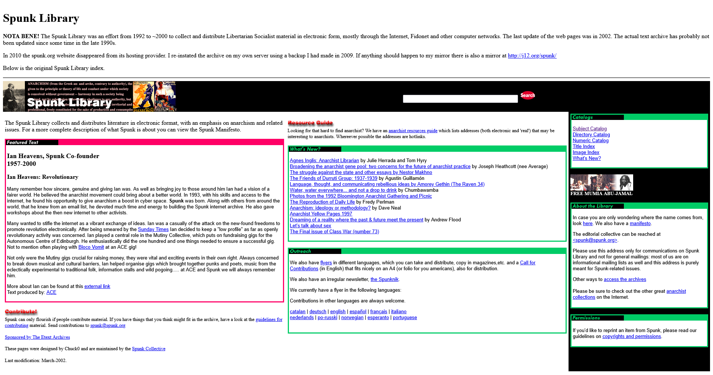

Website made by Google Stitch
Website made by Google Stitch
Website made by Google Stitch, using my design as prompt. the website made complex effects that would take me a long time to code out but only took few minutes for AI to generate. Although after 3 improved version on begining template, no matter how you prompt it the website generated will become a mess and nolonger generateable by browsers, but it has only been released really recently, I can't imaging how useful AI can be for future web developers.
 Wikimedia Commons
Wikimedia Commons
Wikimedia Commons is the first web archive that comes to mind. If you don't know what it is, it stores all the images, audio, and documentation from your visits to Wikipedia.
This web archive is attached to the main Wikipedia site, serving as a dedicated storage site. While it's still searchable within the site, the items mainly come from various different entries, and are mostly academic in nature; local storage and searching are not its primary purpose.


Wayback MachineThe Wayback Machine is another well-known web archive. Unlike most stereotypical web archives, its purpose is to preserve a specific moment in the history of web pages. You can look back at YouTube from the 2010s, for example, and see how those famous websites gradually evolved into what they are today.
The Wayback Machine is also an important tool for finding lost media. You never know that a casual record you make might become a clue or the only record of a lost medium in the future.
Wayback Machine's index relies on searching the URLs of individual web pages, then using timelines to find past user records.

spunk librarySpunk Library is a quirky archive that focuses on the chaotic internet content from before 2000, focusing content was uploaded by early internet users during a time when the internet was still in disarray, lacking regulation and consensus. The archive still retains a strong old-fashioned internet style, using archaic search methods. You can also see some plain text (only text and line breaks) as records of web page content, and a series of rough but simple information archives.